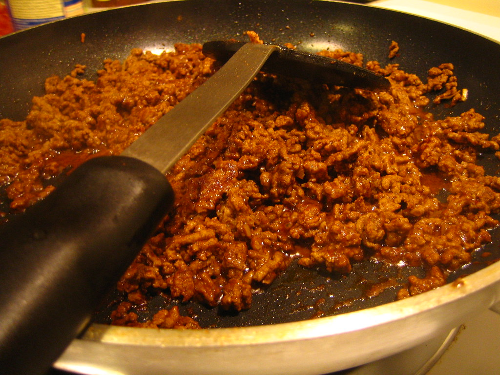

Taco Meat

Description
Ingredients
- Vegetable oil
- 2 c rice
- 2 c chicken stock
- 1 c tomato sauce
- 1.5 tsp salt
- 1 tsp garlic powder
- lime
- cilantro
Recipe
- Use saute function on Instant Pot to heat oil and start toasting the rice.
- Stir in broth, tomato, salt, and garlic
- Add lid, cook for 12 minutes on low pressure, immediately release once the time is done.
- Serve with fresh lime and cilantro.
Back home